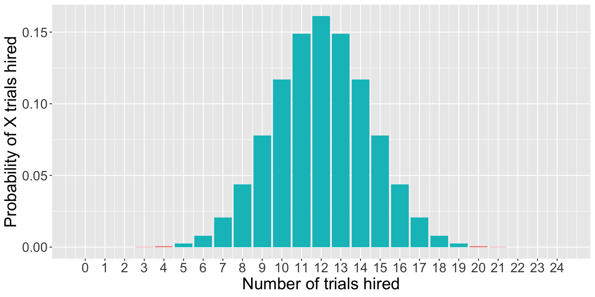

This is referred to as the 95% confidence interval (CI). Note the assumption of normality, which should hold by the Central Limit Theorem, if \(N\) is sufficiently large.
ggplot(data.frame(x =seq(-4, 4)), aes(x)) +stat_function(fun =function(x) dnorm(x)) +stat_function(fun =function(x) dnorm(x),xlim =c(-1.96, 1.96), geom ="area", fill ="purple", alpha = .3) +geom_vline(aes(xintercept =1.96), color ="purple")+geom_vline(aes(xintercept =-1.96), color ="purple") +geom_label(aes(x =1.96, y = .3, label ="1.96"))+geom_label(aes(x =-1.96, y = .3, label ="-1.96"))
What if you didn’t know the value?
Code
ggplot(data.frame(x =seq(-4, 4)), aes(x)) +stat_function(fun =function(x) dnorm(x)) +stat_function(fun =function(x) dnorm(x),xlim =c(-1.96, 1.96), geom ="area", fill ="purple", alpha = .3) +geom_vline(aes(xintercept =1.96), color ="purple")+geom_vline(aes(xintercept =-1.96), color ="purple") +geom_label(aes(x =1.96, y = .3, label ="?"))+geom_label(aes(x =-1.96, y = .3, label ="?"))
What if you didn’t know the value?
Code
ggplot(data.frame(x =seq(-4, 4)), aes(x)) +stat_function(fun =function(x) dnorm(x)) +stat_function(fun =function(x) dnorm(x),xlim =c(-1.96, 1.96), geom ="area", fill ="purple", alpha = .3) +stat_function(fun =function(x) dnorm(x),xlim =c(-4, -1.96), geom ="area", fill ="green", alpha = .3) +stat_function(fun =function(x) dnorm(x),xlim =c(4, 1.96), geom ="area", fill ="green", alpha = .3) +geom_vline(aes(xintercept =1.96), color ="purple")+geom_vline(aes(xintercept =-1.96), color ="purple") +geom_label(aes(x =1.96, y = .3, label ="?"))+geom_label(aes(x =-1.96, y = .3, label ="?"))
What if you didn’t know the value?
Code
ggplot(data.frame(x =seq(-4, 4)), aes(x)) +stat_function(fun =function(x) dnorm(x)) +stat_function(fun =function(x) dnorm(x),xlim =c(-4, 1.96), geom ="area", fill ="purple", alpha = .3) +geom_vline(aes(xintercept =1.96), color ="purple")+geom_label(aes(x =1.96, y = .3, label ="?"))
qnorm(.975)
[1] 1.959964
Hypothesis
What is a hypothesis?
In statistics, a hypothesis is a statement about the population. It is usually a prediction that a parameter describing some characteristic of a variable takes a particular numerical value, or falls into a certain range of values.
Hypothesis
For example, dogs are characterized by their ability to read humans’ social cues, but it is (was) unknown whether that skill is biologically prepared. I might hypothesize that when a human points to a hidden treat, puppies do not understand that social cue and their performance on a related task is at-chance. We would call this a research hypothesis.
This could be represented numerically as, as a statistical hypothesis:
In Null Hypothesis Significance Testing, we… test a null hypothesis.
A null hypothesis ( \(H_0\) ) is a statement of no effect. The research hypothesis states that there is no relationship between X and Y, or our intervention has no effect on the outcome.
The statistical hypothesis is either that the population parameter is a single value, like 0, or that a range, like 0 or smaller.
The alternative hypothesis
According to probability theory, our sample space must cover all possible elementary events. Therefore, we create an alternative hypothesis ( \(H_1\) ) that is every possible event not represented by our null hypothesis.
\[H_0: \Pi = .50\]\[H_1: \Pi \neq .50\]
\[H_0: \Pi \leq .50\]\[H_1: \Pi > .50\]
The tortured logic of NHST
We create two hypotheses, \(H_0\) and \(H_1\). Usually, we care about \(H_1\), not \(H_0\). In fact, what we really want to know is how likely \(H_1\), given our data.
\[P(H_1|D)\] Instead, we’re going to test our null hypothesis. Well, not really. We’re going to assume our null hypothesis is true, and test how likely we would be to get these data.
\[P(D|H_0)\]
Example #1
Consider the example of puppies’ abilities to read human social cues.
Let \(\Pi\) be the probability the puppy chooses the correct cup.
In a task with two choices, an at-chance performance is \(\Pi = .5\). This can be the null hypothesis because if this is true, than puppies would make the correct choice as often as they would make an incorrect choice.
Note that the null hypothesis changes depending on the situation and research question.
Example #1
As a dog-lover, you’re skeptical that reading human social cues is purely learned, and you have an alternative hypothesis that puppies will perform well over chance, thus having a probability of success on any given task greater than .5.
\[H_0: \Pi = .5\]\[H_1: \Pi \neq .5\]
Example #1
To test the null hypothesis, you find a puppy and test them 12 times on a pointing task. The puppy makes the correct choice 10 times.
The question you’re going to ask is:
“How likely is it that the puppy is successful 10 times out of 12, if the probability of success is .5?”
This is the essence of NHST.
You can already test this using what you know about the binomial distribution.
dbinom(10, size =12, prob = .5)
[1] 0.01611328
Code
trial =0:12data.frame(trial = trial, d =dbinom(trial, size =12, prob = .5), color =ifelse(trial ==10, "1", "2")) %>%ggplot(aes(x = trial, y = d, fill = color)) +geom_bar(stat ="identity") +guides(fill ="none")+scale_x_continuous("Number of puppy successes", breaks =c(0:12))+scale_y_continuous("Probability of X successes") +theme(text =element_text(size =20))
Complications with the binomial
The likelihood of the puppy being successful 10 times out of 12 if the true probability of success is .5 is 0.02. That’s pretty low! That’s so low that we might begin to suspect that the true probability is not .5.
But there’s a problem with this example. The real study used a sample of many puppies (>300), and the average number of correct trials per puppy was about 8.33. But the binomial won’t allow us to calculate the probability of fractional successes.
So what do we do when our sample statistic is continuous, rather than discrete?
Our statistic is usually continuous
When we estimate a statistic for our sample – like the proportion of puppy success, or the average IQ score, or the relationship between age in months and second attending to a new object – that statistic is nearly always continuous. So we have to assess the probability of that statistic using a probability distribution for continuous variables, like the normal distribution. (Or t, or F, or \(\chi^2\) ).
What is the probability of any value in a continuous distribution?
Instead of calculating the probability of our statistic, we calculate the probability of our statistic or more extreme under the null.
The probability of success on 10 trials out of 12 or more extreme is 0.01.
Code
data.frame(trials = trial, d =dbinom(trial, size =12, prob = .5), color =ifelse(trial %in%c(0,1,2, 10,11,12), "1", "2")) %>%ggplot(aes(x = trials, y = d, fill = color)) +geom_bar(stat ="identity") +guides(fill ="none")+scale_x_continuous("Number of successes", breaks =c(0:12))+scale_y_continuous("Probability of X successes") +theme(text =element_text(size =20))
As we have more trials…
Code
data.frame(trials =0:24, d =dbinom(0:24, size =24, prob = .5), color =ifelse(0:24%in%c(0:4, 20:24), "1", "2")) %>%ggplot(aes(x = trials, y = d, fill = color)) +geom_bar(stat ="identity") +guides(fill ="none")+scale_x_continuous("Number of trials hired", breaks =c(0:24))+scale_y_continuous("Probability of X trials hired") +theme(text =element_text(size =20))

… and more trials…
Code
data.frame(trials =0:36, d =dbinom(0:36, size =36, prob = .5), color =ifelse(0:36%in%c(0:6, 30:36), "1", "2")) %>%ggplot(aes(x = trials, y = d, fill = color)) +geom_bar(stat ="identity") +guides(fill ="none")+scale_x_continuous("Number of trials hired", breaks =c(0:36))+scale_y_continuous("Probability of X trials hired") +theme(text =element_text(size =20))
If our measure was continuous, it would look something like this.
Code
gg_color_hue <-function(n) { hues =seq(15, 375, length = n +1)hcl(h = hues, l =65, c =100)[1:n]}colors =gg_color_hue(2)data.frame(x =seq(-4,4)) %>%ggplot(aes(x=x)) +stat_function(fun =function(x) dnorm(x), geom ="area", fill = colors[2])+stat_function(fun =function(x) dnorm(x), xlim =c(-4, -2.32), geom ="area", fill = colors[1])+stat_function(fun =function(x) dnorm(x), xlim =c(2.32, 4), geom ="area", fill = colors[1])+geom_hline(aes(yintercept =0)) +scale_x_continuous(breaks =NULL)+labs(x ="successes",y ="Probability of X successes") +theme(text =element_text(size =20))
Quick recap
For any NHST test, we:
Identify the null hypothesis ( \(H_0\) ), which is usually the opposite of what we think to be true.
Collect data.
Determine how likely we are to get these data or more extreme if the null is true.
What’s missing?
How do we determine what the distribution looks like if the null hypothesis is true?
How unlikely do the data have to be to “reject” the null?
Enter sampling distributions
Code
data.frame(trials = trial, d =dbinom(trial, size =12, prob = .5), color =ifelse(trial %in%c(0,1,2, 10,11,12), "1", "2")) %>%ggplot(aes(x = trials, y = d, fill = color)) +geom_bar(stat ="identity") +guides(fill ="none")+scale_x_continuous("Number of successes", breaks =c(0:12))+scale_y_continuous("Probability of X successes") +theme(text =element_text(size =20))
When we were analyzing the puppy problem, we built the distribution under the null using the binomial.
This is our sampling distribution.
What do we need to know to build a sampling distribution based on the binomial?
But as we said before, we’re not really going to use the binomial much to make inferences about statistics, because the vast majority of our statistics are continuous, not discrete. Instead, we’ll use other distributions to create our sampling distributions. Sometimes \(t\) , or \(F\) , or \(\chi^2\) .
For now, we’ll work through an example using the standard normal distribution.
Example #2
Bray and colleagues (2020) test a sample of 10* puppies on multiple cognitive tasks, including their ability to correctly find a treat hidden under one of two cups based on human pointing. The average success rate was 69.41% (SD = 18.88).
How do you generate the sampling distribution around the null?
The mean of the sampling distribution = the mean of the null hypothesis
The standard deviation of the sampling distribution:
\[\small SEM =
\frac{\sigma}{\sqrt{N}}\]
Code
data.frame(x =seq(0,100)) %>%ggplot(aes(x=x)) +stat_function(fun =function(x) dnorm(x, mean =50, sd =18.88/sqrt(10)), geom ="area", fill ="purple", alpha = .5) +stat_function(fun =function(x) dnorm(x, mean =50, sd =18.88/sqrt(5)), geom ="area", fill ="red", alpha = .5) +stat_function(fun =function(x) dnorm(x, mean =50, sd =18.88/sqrt(2)), geom ="area", fill ="blue", alpha = .5) +labs(title =as.expression(bquote("Population"~mu~"=50"~sigma~"=5.97")),x ="Average proportion of successes",y =NULL) +theme(text =element_text(size =20))
The mean of the sampling distribution = the mean of the null hypothesis
The standard deviation of the sampling distribution:
\[\small SEM = \frac{\sigma}{\sqrt{N}}\]
Code
sem =18.88/sqrt(10)data.frame(x =seq(0,100)) %>%ggplot(aes(x=x)) +stat_function(fun =function(x) dnorm(x, mean =50, sd = sem), geom ="area", alpha = .75) +labs(title =as.expression(bquote("Population"~mu~"=50"~sigma~"=5.97")),x ="Average proportion of successes",y =NULL) +theme(text =element_text(size =20))
All well and good.
Note that we didn’t have access to the population standard deviation – we had to make use of the sample standard deviation instead:
So long as your estimate of the standard deviation is already corrected for bias (you’ve divided by \(N-1\) ), then you can swap in your sample SD.
Code
data.frame(x =seq(0,100)) %>%ggplot(aes(x=x)) +stat_function(fun =function(x) dnorm(x, mean =50, sd =18.88/sqrt(10)), geom ="area") +stat_function(fun =function(x) dnorm(x, mean =50, sd =18.88/sqrt(10)), geom ="area", xlim =c(0, 35.81), fill = colors[1]) +stat_function(fun =function(x) dnorm(x, mean =50, sd =18.88/sqrt(10)), geom ="area", xlim =c(64.19, 100), fill = colors[1]) +geom_vline(aes(xintercept =64.19), color ="purple") +labs(title =as.expression(bquote("Population"~mu~"=50"~sigma~"=5.97")),x ="Average proportion of successes",y =NULL) +theme(text =element_text(size =20))
Code
M =50s =18.88N =10X =69.41sem = s/sqrt(N)z = (X-M)/sem
We have a normal distribution for which we know the mean (M), the standard deviation (SEM), and a score of interest ( \(\bar{X}\) ).
We can use this information to calculate a Z-score; in the context of comparing one mean to a sampling distribution of means, we call this a Z-statistic.
And here’s where we use the properties of the Standard Normal Distribution to calculate probabilities, specifically the probability of getting a score this far away from \(\mu\) or more extreme:
pnorm(-3.25) +pnorm(3.25, lower.tail = F)
[1] 0.00115405
pnorm(-3.25)*2
[1] 0.00115405
The probability that the average puppy’s success rate would be at least 19.41 percentage points away from at-chance (50/%) 0.001.
The probability that the average puppy’s success rate would be at least 19.41 percentage points away from at-chance (50/%) 0.001.
0.001 is our p-value.
What does this mean?
A p-value DOES NOT:
Tell you that the probability that the null hypothesis is true.
Prove that the alternative hypothesis is true.
Tell you anything about the size or magnitude of any observed difference in your data.
p-values
\[p = 0.001\]
Is that a really low probability?
Before you test your hypotheses – ideally, even before you collect the data – you have to determine how low is too low.
Researchers set an alpha ( \(\alpha\) ) level that is the probability at which you declare your result to be “statistically significant.” How do we determine this?
p-values and error
Consider what the p-value means. In a world where the null ( \(H_0\) ) is true, then by chance, we’ll get statistics in the extreme. Specifically, we’ll get them \(\alpha\) proportion of the time. So \(\alpha\) is our tolerance for False Positives or incorrectly rejecting the null.
alpha
Historically, psychologists have chosen to set their \(\alpha\) level at .05, meaning any p-value less than .05 is considered “statistically significant” or the null is rejected.
This means that, among the times we examine a relationship that is truly null, we will reject the null 1 in 20 times.
Some have argued that this is not conservative enough and we should use \(\alpha < .005\) (Benjamin et al., 2018).
NHST Steps
Define \(H_0\) and \(H_1\).
Choose your \(\alpha\) level.
Collect data.
Define your sampling distribution using your null hypothesis and either the knowns about the population or estimates of the population from your sample.
Calculate the probability of your data or more extreme under the null.
Compare your probability (p-value) to your \(\alpha\) level and decide whether your data are “statistically significant” (reject the null) or not (retain the null).